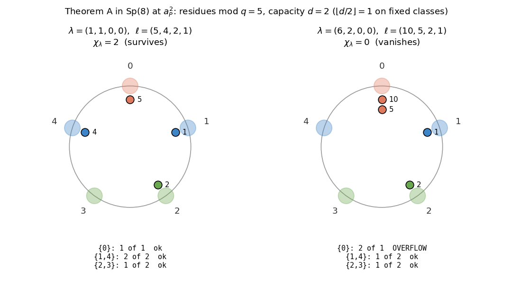
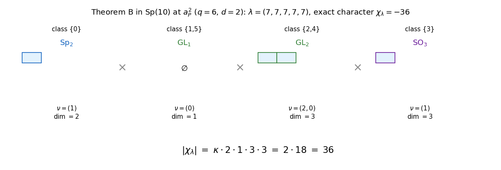
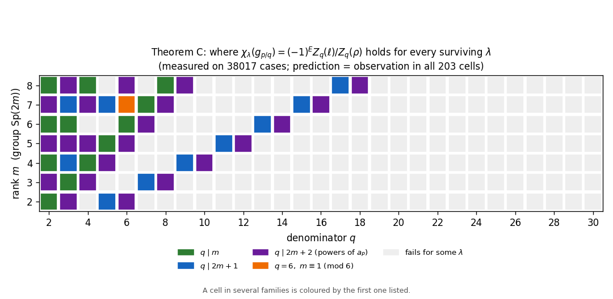
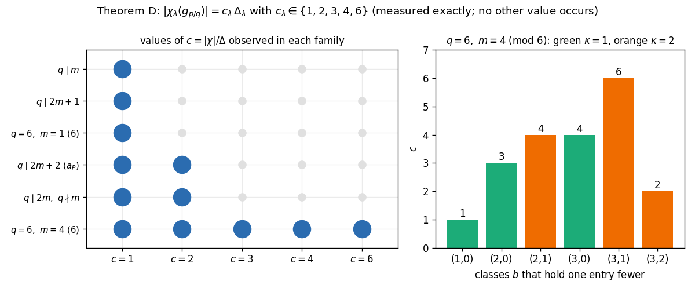

Characters of Sp(2m) at the powers of Kostant’s element: blueprint
📐 Setting (copied from the paper)
Let \(\rho =(m,m-1,\dots ,1)\), with the form normalised so that the short roots \(e_i\pm e_j\) have length \(2\). \(g_\theta \in \mathrm{Sp}(2m)\) has eigenvalues \(e^{\pm 2\pi i\theta j}\), \(j=1,\dots ,m\); \(t=2m+2\); Kostant’s element is \(a_P=g_{1/t}\), and \(a_P^{\, k}=g_{p/q}\) with \(d=\gcd (k,t)\), \(q=t/d\), \(p=k/d\). For \(\ell =\lambda +\rho \): \(N_q(x)=\# \{ \alpha {\gt}0: q\mid (x,\alpha )\} \), \(Z_q(x)=\prod _{\alpha {\gt}0,\ q\mid (x,\alpha )}(x,\alpha )\), \(E_{p,q}(\lambda )=\sum _{\alpha {\gt}0}(\lfloor p(\ell ,\alpha )/q\rfloor -\lfloor p(\rho ,\alpha )/q\rfloor )\), over the positive roots \(e_i\pm e_j\) \((i{\lt}j)\) and \(2e_i\). Folded classes \(\{ c,-c\} \) modulo \(q\); fixed if \(2c\equiv 0\).
1 Main theorems
Let \(\lambda \) be a dominant weight of \(\mathrm{Sp}(2m)\), \(k\ge 1\), and \(d,q,p\) as above.
\(N_q(\ell )\ge N_q(\rho )\), and \(\chi _\lambda (a_P^{\, k})\neq 0\) if and only if \(N_q(\ell )=N_q(\rho )\). Equivalently, each folded class modulo \(q\) contains at most \(d\) of the entries \(\ell _1,\dots ,\ell _m\), and each fixed class at most \(\lfloor d/2\rfloor \).
If \(\chi _\lambda (a_P^{\, k})\neq 0\), then
\[ \chi _\lambda (a_P^{\, k})\; =\; (-1)^{E_{p,q}(\lambda )}\, \frac{Z_q(\lambda +\rho )}{Z_q(\rho )} . \]
🆕 Classical and new: for k prime to 2m+2 this is due to Cellini, Möseneder Frajria and Papi; for gcd(k, 2m+2) odd it follows from Albion's factorisations, with the sign (−1)E added. New: for gcd(k, 2m+2) even and q ≥ 3, the values on the classes not conjugate to that of ρ.
↳ Used in: Theorem B, Theorem 10.1
Part (1) is Proposition 3.1 together with Corollary 4.1, since \(a_P^{\, k}=g_{p/q}\).
For part (2), let \(\theta =p/q+\varepsilon \) with \(\varepsilon \to 0\) in (3); the character is continuous in \(\theta \). For a positive integer \(A\) with \(q\nmid A\) one has \(\operatorname {sgn}\sin (\pi pA/q)=(-1)^{\lfloor pA/q\rfloor }\), and for \(q\mid A\), \(\sin (\pi A\theta )=(-1)^{pA/q}\pi A\varepsilon +O(\varepsilon ^3)\). For \(\lambda \) dominant every \((\ell ,\alpha )\) and every \((\rho ,\alpha )\) with \(\alpha {\gt}0\) is a positive integer. By part (1) the numerator and the denominator of (3) carry the same number \(r_q\) of vanishing factors, so the powers of \(\pi \varepsilon \) cancel, each vanishing factor leaves its exponent, and every factor leaves its sign. Hence
The quantity \(|\sin (\pi pj/q)|\) depends only on \(j\) modulo \(q\) and up to sign, so by Proposition 5.1 and (7) the last quotient is \(1\).
🖼️ Figure

Theorem A at a glance (commentary, not part of the paper): the numbers \(\ell _i\) placed on the residues modulo \(q\); folded classes \(\{ c,-c\} \) share a colour. The character vanishes exactly when some class holds more than its capacity. Values computed exactly in \(\mathbb {Z}[\zeta _q]\) by figuras/fig_reloj_A.py (a check in the blueprint’s source, published with the blueprint).
💡 In plain words (commentary, not part of the paper)
On the line of \(\rho \) the Weyl character formula is, up to the phase \(z^{-(\lambda ,\rho )}\), a product over the positive roots of \((1-z^{(\ell ,\alpha )})/(1-z^{(\rho ,\alpha )})\) (equation (2) of the paper), and at a primitive \(q\)-th root of unity a factor vanishes exactly when \(q\) divides its root value. Part (1): the character survives exactly when \(\ell \) has no more vanishing factors than \(\rho \); in type \(C\) this is a capacity rule on the residues of the \(\ell _i\) (Corollary 4.1). Part (2): approaching the point along the line, each vanishing factor leaves its root value, which gives \(Z_q(\ell )/Z_q(\rho )\); every factor leaves a sign, which gives \(E_{p,q}\); and the remaining sines cancel, because \(\ell \) and \(\rho \) have the same root values modulo \(q\) up to sign (Proposition 5.1). For \(\gcd (k,2m+2)=1\) this is the type-\(C\) case of Cellini–Möseneder Frajria–Papi; for \(d\) odd the paper says that Theorems A and B are not new in substance (Albion, Ayyer–Kumari), and for \(q\) odd Reeder gives part (2) up to a constant. For \(d\) even and \(q\ge 3\) the values on the classes not Weyl-conjugate to that of \(\rho \), together with \(\kappa \), are new (Example 6.1).
🛡️ Evidence & scope
Not formalized in Lean. Proof on paper.
Value and sign, checked by program signo_Fq.py (supplement): \(18\, 904\) surviving weights, \(m=2,\dots ,8\), every \(k\) with \(1\le k{\lt}2m+2\), \(\lambda _1\le 9\) (\(m\le 4\)), \(\le 7\) (\(m=5,6\)), \(\le 5\) (\(m=7,8\)); this box is in the program, not in the paper. Reference value: the character as an exact integer determinant built from the spectrum of Proposition 2.1. Exact arithmetic; value, modulus and sign each \(18\, 904\) of \(18\, 904\) (signo_Fq_OUT.txt). Its only negative control shows that the formula needs the survival hypothesis; there is no mutation of \(E_{p,q}\).
Additional check, not part of the supplement: comprueba_traducciones_aP.py (a check in the blueprint’s source, published with the blueprint), run when this blueprint is built: \(2336\) cases, \(m=2,\dots ,5\), every power \(k{\lt}2m+2\), \(\lambda _1\le 4\), character computed exactly in \(\mathbb {Z}[\zeta _q]\) by the principal specialisation (equation (2), the starting point of the proof). Part (1) as the occupancy rule and part (2) as the closed form: \(0\) failures. Mutation (bound of the fixed classes changed to \(d\)): detected in \(567\) cases (comprueba_traducciones_aP_OUT.txt).
Sign form of Remark 6.2: valor_signo_recuento.py V3, \(11\, 972\) surviving weights, exact, \(0\) failures.
Example 6.1: cifras_alco.py E1 reproduces \(-2\) and \(+2\), \(Z_3(\ell )=6\), \(Z_3(\rho )=3\); the character is an exact polynomial in \(\mathbb {Z}[z]\), evaluated at the root of unity in double precision (tolerance \(10^{-9}\)). The individual root values and the absence of \(w\) with \(w\ell \equiv \rho \pmod3\) are not printed by any program.
🔤 Read this theorem in another mathematical language
Commentary, not part of the paper. \(\chi _\lambda \) is the character of the irreducible representation of \(\mathrm{Sp}(2m)\) with highest weight \(\lambda \), evaluated at the power \(a_P^{\, k}=g_{p/q}\) of Kostant’s principal element of the maximal torus. The criterion counts the positive roots \(\alpha \) on which \(\ell =\lambda +\rho \) is divisible by \(q\): the character is nonzero exactly when \(\ell \) lies on as few of these root hyperplanes modulo \(q\) as \(\rho \) does, and then its value is a signed ratio of the products of those root values.
Commentary, not part of the paper. Let \(\zeta =e^{2\pi i/q}\). Then \(\chi _\lambda (a_P^{\, k})=sp_\lambda (z_1^{\pm 1},\dots ,z_m^{\pm 1})\), the symplectic Schur function at \(z_j=\zeta ^{pj}\). Put \(\ell _i=\lambda _i+m-i+1\), so \(\ell _1{\gt}\dots {\gt}\ell _m\ge 1\), and \(\rho =(m,\dots ,1)\).
Vanishing. Reduce \(\ell _1,\dots ,\ell _m\) modulo \(q\) and identify each residue \(c\) with \(-c\). The value is nonzero exactly when every class holds at most \(d\) of the \(\ell _i\), and the classes of \(0\) and (for \(q\) even) \(q/2\) hold at most \(\lfloor d/2\rfloor \).
Value. For \(x=(x_1,\dots ,x_m)\) let \(Z(x)\) be the product of those numbers among \(x_i-x_j,\ x_i+x_j\ (i{\lt}j)\) and \(2x_i\) that are divisible by \(q\). If the value is nonzero, then \(sp_\lambda (\dots )=(-1)^{E}\, Z(\ell )/Z(\rho )\), where \(E\) is the sum, over the same \(m^2\) numbers \(y(x)\), of \(\lfloor p\, y(\ell )/q\rfloor -\lfloor p\, y(\rho )/q\rfloor \).
Commentary, not part of the paper. The \(2m\) eigenvalues of \(a_P^{\, k}\) are the roots of unity \(\zeta ^{\pm pj}\), \(\zeta =e^{2\pi i/q}\); as a multiset they are \(d\) copies of the \(q\)-th roots of unity with two letters removed (Proposition 2.1). A character value is a priori an element of \(\mathbb {Z}[\zeta ]\); at these points every character value is a rational integer (Proposition 8.1). Theorem A identifies that integer. With \(\ell _i=\lambda _i+m-i+1\), count the coincidences \(\zeta ^{p\ell _i}=\zeta ^{\pm p\ell _j}\) \((i{\lt}j)\) and \(\zeta ^{p\ell _i}=\zeta ^{-p\ell _i}\) (that is, \(\zeta ^{p\ell _i}=\pm 1\)). The value is \(0\) exactly when there are more of them than for \(\rho \); otherwise it is \(\pm Z_q(\ell )/Z_q(\rho )\), a ratio of products of the integers \(\ell _i\pm \ell _j\) and \(2\ell _i\) that are divisible by \(q\). Those coincidences are exactly the divisibilities: \(\zeta ^{p\ell _i}=\zeta ^{\mp p\ell _j}\) if and only if \(q\mid \ell _i\pm \ell _j\), and \(\zeta ^{p\ell _i}=\zeta ^{-p\ell _i}\) if and only if \(q\mid 2\ell _i\), because \(p\) is prime to \(q\).
🧪 Lab: try Theorem A with your own parameters
Commentary, not part of the paper. The lab runs, in your browser, the same Python file that the
supplement uses (evlib.py): the Theorem A formula and, independently, the exact character in
Z[ζq]. It explores cases; it does not prove the theorem. The exact character is evaluated at
g1/q. At the powers of aP it equals the value at gp/q: by Proposition 2.1,
χ(aPk) = χ(aPd) = χ(g1/q); equivalently, the value is a rational
integer (Proposition 8.1, m ≥ 2) and is fixed by the automorphism ζq ↦ ζqp
that carries g1/q to gp/q.
- Click an example, or choose the group, the power and the weight λ.
- The answer appears at once, in one sentence.
- Open “See the computation” to follow it step by step.
⏳ the page is ready; Python will load in the background…
Let \(\lambda \) be as in Theorem A with \(\chi _\lambda (a_P^{\, k})\neq 0\). Then
where \(n_c\) is the number of \(\ell _i\) in the class \(c\), the factor for \(q/2\) is omitted when \(q\) is odd, and \(\kappa (\lambda )=1\) if \(d\) is odd or if the class \(0\) holds fewer than \(d/2\) of the \(\ell _i\), and \(\kappa (\lambda )=2\) otherwise.
🆕 Classical and new: for gcd(k, 2m+2) odd the absolute values are known (Ayyer–Kumari, Albion). New: the factor κ for gcd(k, 2m+2) even and q ≥ 3.
↳ Used in: Theorem D, Theorem 10.1, Corollary 10.2
By Theorem A, \(|\chi _\lambda (a_P^{\, k})|=Z_q(\ell )/Z_q(\rho )\). The roots \(\alpha \) with \(q\mid (\ell ,\alpha )\) join two indices of the same folded class, or are \(2e_i\) with \(\ell _i\) in a fixed class. We compute \(Z_q\) class by class.
A non-fixed class \(c\) with \(n\) entries. For two of its entries exactly one of \((\ell ,e_i-e_j)\), \((\ell ,e_i+e_j)\) is divisible by \(q\), and its absolute value is \(|\varepsilon _i\ell _i-\varepsilon _j\ell _j|=q|y_i-y_j|\); no \(2e_i\) contributes. The \(y_i\) are distinct, and with \(y_1{\gt}\dots {\gt}y_n\) the Weyl dimension formula for \(\mathrm{GL}_n\) gives \(\prod _{i{\lt}j}(y_i-y_j)=V_n\dim V^{\mathrm{GL}_n}_{\nu ^{(c)}}\), where \(V_n=\prod _{j{\lt}n}j!\). The contribution is \(q^{\binom n2}V_n\dim V^{\mathrm{GL}_n}_{\nu ^{(c)}}\).
The class \(0\) with \(n\) entries \(\ell _i=qz_i\), \(z_1{\gt}\dots {\gt}z_n\ge 1\). All of \(e_i\pm e_j\) and \(2e_i\) contribute, with values \(q(z_i\pm z_j)\) and \(2qz_i\). Since \(z=\nu ^{(0)}+\rho _{C_n}\), the Weyl dimension formula for \(\mathrm{Sp}_{2n}\) gives the contribution \(q^{n^2}C_n\dim V^{\mathrm{Sp}_{2n}}_{\nu ^{(0)}}\), where \(C_n=2^n\prod _{i{\lt}j}\bigl((n-i+1)^2-(n-j+1)^2\bigr)\, n!=2^n\prod _{j\le n}(2j-1)!\).
The class \(q/2\) with \(n\) entries \(\ell _i=qz_i\), \(z_i\in \tfrac 12+\mathbb {Z}\). Again all of \(e_i\pm e_j\) and \(2e_i\) contribute, and since \(z=\nu ^{(q/2)}+\rho _{B_n}\) with \(\rho _{B_n}=(n-\tfrac 12,\dots ,\tfrac 12)\), the Weyl dimension formula for \(\mathrm{SO}_{2n+1}\) gives \(q^{n^2}B_n\dim V^{\mathrm{SO}_{2n+1}}_{\nu ^{(q/2)}}\), where \(B_n=\prod _{j\le n}(2j-1)!\).
The same computation applies to \(\rho \), whose entries in each class form an unbroken run (the class \(c\) receives \(c,q+c,2q+c,\dots \) and \(q-c,2q-c,\dots \), so the \(y_i\) are consecutive integers; the class \(0\) receives \(q,2q,\dots \); the class \(q/2\) receives \(q/2,3q/2,\dots \)), so all its partitions are empty and all its dimensions are \(1\). The powers of \(q\) agree on the two sides, since \(N_q(\ell )=N_q(\rho )\). Hence \(Z_q(\ell )/Z_q(\rho )\) is the product of the dimensions in the statement times the ratio of the constants \(V_{n_c}\), \(C_{n_0}\), \(B_{n_{q/2}}\) for the occupancies of \(\ell \) and of \(\rho \). If \(d\) is odd the occupancies agree (Section 4) and the ratio is \(1\). If \(d\) is even, put \(h=d/2\); the class \(0\) of \(\rho \) holds \(h-1\) entries and every other class is full; if the class of \(\ell \) that falls short is \(0\), the occupancies agree again; otherwise that class holds one entry less and the class \(0\) one entry more than for \(\rho \), and the ratio is
according as that class is non-fixed or is \(q/2\).
🖼️ Figure

Theorem B at a glance (commentary, not part of the paper): each folded class becomes a factor (\(\mathrm{Sp}\) for the class \(0\), \(\mathrm{SO}\) for \(q/2\), \(\mathrm{GL}\) otherwise) with its partition \(\nu ^{(c)}\); the absolute value of the character is \(\kappa \) times the product of their dimensions. The example is chosen by the script, which computes \(\kappa \) by the rule of the theorem (\(\kappa =1\) if \(d\) is odd or the class \(0\) holds fewer than \(d/2\) entries, else \(2\)), not as \(|\chi |/\Delta \), and checks \(|\chi |=\kappa \, \Delta \) against the exact character in \(\mathbb {Z}[\zeta _q]\) on all \(1232\) weights it examines (figuras/fig_factorizacion_B.py, a check in the blueprint’s source, published with the blueprint).
💡 In plain words (commentary, not part of the paper)
By Theorem A, \(|\chi _\lambda (a_P^{\, k})|=Z_q(\ell )/Z_q(\rho )\), and the proof computes \(Z_q\) one folded class at a time. A root enters \(Z_q\) only if it joins two entries of the same class, or is \(2e_i\) with \(\ell _i\) in a fixed class. In a non-fixed class the values that enter are \(q\) times differences of the \(y_i\): the Weyl dimension formula of \(\mathrm{GL}_n\). In the class \(0\) they are \(q(z_i\pm z_j)\) and \(2qz_i\): the formula of \(\mathrm{Sp}_{2n}\). In the class \(q/2\), with half-integer \(z_i\): the formula of \(\mathrm{SO}_{2n+1}\). For \(\rho \) every partition is empty. What is left is a ratio of normalising constants, which is \(1\) unless \(d\) is even and the class that falls short is not \(0\); then it is \(2\), and that is \(\kappa \). The groups are not centralisers: at \(m=6\), \(k=7\) the factorisation group is \(\mathrm{Sp}_6\times \mathrm{SO}_7\), the centraliser \(\mathrm{Sp}_6\times \mathrm{Sp}_6\) (Question 12.1).
🛡️ Evidence & scope
Not formalized in Lean. Proof on paper.
Checked by program dims_recuento.py: \(11\, 972\) surviving weights, \(m=2,\dots ,7\), every \(k\), \(\lambda _1\le 8\) (\(m\le 4\)), \(\le 6\) (\(m\ge 5\)), box not stated in the paper. Exact (rational arithmetic, integer determinant); \(11\, 972\) of \(11\, 972\) (dims_recuento_OUT.txt). Like signo_Fq.py, it builds the spectrum from Proposition 2.1. It has no negative control for \(\kappa \): its column “kappa=1 mal” is not a mutation. A \(\kappa \equiv 1\) mutation exists in residual_factorizacion.py, in the setting of Theorem 10.1 (floating point; breaks \(371\) of \(1145\)).
Example 7.1: cifras_alco.py E2, \(Z_3(\ell )/Z_3(\rho )=419904/52488=8\) and \(E=17\) exactly, value \(-8\) in double precision (tolerance \(10^{-9}\)). The partitions and the dimensions \(4\) and \(2\) are not printed.
End of Section 7: certifica_testigos.py, \(\chi _{(1,1,0,0,0,0)}(a_P^{\, 7})=-7\) exactly; cifras_alco.py E5, \(d=7\), \(q=2\), eigenvalues \(\pm 1\) six times each. The traces \(0\) and \(-6\) and the absence of a \(7\)-dimensional irreducible of \(\mathrm{Sp}_6\times \mathrm{Sp}_6\) are not checked by any program.
No program: \(\chi _{jq\rho }(a_P^{\, k})=(jq+1)^{r_q}\) (introduction), and the constants \(C_n\), \(B_n\), \(V_n\) with the ratio \(2\) (proof on paper).
🔤 Read this theorem in another mathematical language
Commentary, not part of the paper. The absolute value of the character is \(\kappa (\lambda )\in \{ 1,2\} \) times the dimension of an irreducible representation of the product group \(\mathrm{Sp}_{2n_0}\times \mathrm{SO}_{2n_{q/2}+1}\times \prod _{0{\lt}c{\lt}q/2}\mathrm{GL}_{n_c}\), one factor for each folded class \(c\) holding \(n_c\) of the entries of \(\ell =\lambda +\rho \), with highest weights the partitions \(\nu ^{(c)}\). This group is not the centraliser of \(a_P^{\, k}\) (the paper gives an example), and Question 12.1 asks for a group that explains the product.
Commentary, not part of the paper. With \(\ell _i=\lambda _i+m-i+1\) grouped by folded residue class modulo \(q\):
a product of principal specialisations at \(1\) of smaller symplectic, odd orthogonal and Schur functions. For a class \(0{\lt}c{\lt}q/2\): choose signs with \(\varepsilon _i\ell _i\equiv c\), list \(y_i=(\varepsilon _i\ell _i-c)/q\) decreasingly and put \(\nu ^{(c)}_i=y_i-y_n-(n-i)\); then \(s_{\nu ^{(c)}}(1^{n_c})\) is the number of semistandard Young tableaux of shape \(\nu ^{(c)}\) with entries at most \(n_c\). For the class \(0\), \(\nu ^{(0)}_i=\ell _i/q-(n_0-i+1)\); for \(q/2\), \(\nu ^{(q/2)}_i=\ell _i/q-(n_{q/2}-i+\frac12)\).
Commentary, not part of the paper. The character value is a rational integer (Proposition 8.1), and Theorem B factors its absolute value: \(\kappa \in \{ 1,2\} \) times a product of integers, one per residue class of the \(\ell _i\) modulo \(q\) up to sign. Each factor is a Weyl dimension, an explicit product of ratios of integers built from the quotients \(\ell _i/q\) (classes \(0\) and \(q/2\)) or from the shifted quotients \((\pm \ell _i-c)/q\) (other classes). So the size of the value is read off from how the \(\ell _i\) distribute among the residues modulo \(q\).
🧪 The lab under Theorem A also shows this factorisation: for a surviving character it lists the factor of each class (Sp, SO or GL, its partition and dimension), κ, and checks the product against the exact character.
Let \(m\ge 2\) and \(q\ge 2\). The identity
holds for every dominant weight \(\lambda \) with \(N_q(\lambda +\rho )=N_q(\rho )\) and every \(p\) prime to \(q\) if and only if \(q\mid m\), \(q\mid 2m+1\), \(q\mid 2m+2\), or \(q=6\) and \(m\equiv 1\pmod6\). Otherwise there is such a \(\lambda \) for which it fails at \(p=1\) even up to sign.
🆕 Classical and new: new: the list of points, and the exclusion of all the others.
↳ Used in: Theorem D
The four families give the identity. If \(q\mid m\), \(q\mid 2m+1\) or \(q\mid 2m+2\), then \(v\in \{ 0,a,q-1\} \) and \(R_p(b)=1\) by Theorem 10.1. If \(q=6\) and \(m\equiv 1\pmod6\), then \(v=1\le a=2\), \(Y=C_1\), \(\rho _Y=(1)\) and \(b=(b_1)\) with \(b_1\in \{ 1,2\} \), so by (9) \(R_p(b)=|\sin (\pi pb_1/3)|/|\sin (\pi p/3)|=1\), since \(p\equiv \pm 1\pmod6\).
No other point does. Suppose that the identity holds up to sign at \(p=1\) for every surviving \(\lambda \). Then every \(\chi _\lambda (g_{1/q})\) is rational, the non-surviving ones being \(0\) by Proposition 3.1, and an algebraic integer, hence an integer; by Proposition 8.1, \(q\) divides \(2m\), \(2m+1\) or \(2m+2\), or \(q=6\) and \(m\equiv 1\pmod3\). The cases not listed in Theorem C are (i) \(q\ge 4\) even, \(q\mid 2m\) and \(q\nmid m\), that is \(m\equiv q/2\pmod q\), and (ii) \(q=6\) and \(m\equiv 4\pmod6\); for \(q=2\) either \(q\mid m\) or \(q\mid 2m+2\). In both we take the natural representation, \(\lambda =(1,0,\dots ,0)\), and \(\xi =e^{2\pi i/q}\). Its character is \(\sum _{j=1}^{m}(\xi ^{j}+\xi ^{-j})\), and full turns contribute \(0\), so it equals \(\sum _{j=1}^{v}(\xi ^{j}+\xi ^{-j})\). In case (i), \(v=q/2\) and this is \(\sum _{j=1}^{q-1}\xi ^{j}+\xi ^{q/2}=-2\); in case (ii), \(v=4\) and it is \(2\sum _{j=1}^{5}\xi ^{j}-(\xi ^{5}+\xi ^{-5})=-2-1=-3\). In particular \(\lambda \) is surviving. On the other hand \(\ell =\rho +e_1\), the roots not involving the index \(1\) take the same values on \(\ell \) and on \(\rho \), and those involving it take the values \(\{ 1,\dots ,2m\} \smallsetminus \{ m\} \) on \(\rho \) and \(\bigl(\{ 2,\dots ,2m\} \smallsetminus \{ m+1\} \bigr)\cup \{ 2m+2\} \) on \(\ell \). None of \(1\), \(m\), \(m+1\), \(2m+2\) is divisible by \(q\): in case (i) they are congruent to \(1\), \(q/2\), \(q/2+1\), \(2\), and in case (ii) to \(1\), \(4\), \(5\), \(4\). So the two sides have the same multiples of \(q\), \(Z_q(\ell )=Z_q(\rho )\), and the identity would give \(\pm 1\). The failure holds at every \(p\), not only at \(p=1\): since \(\chi _\lambda (g_{p/q})=\sigma _p\bigl(\chi _\lambda (g_{1/q})\bigr)\) for the automorphism \(\sigma _p\) of \(\mathbb {Q}(\xi _q)\), a rational value at \(p\) forces a rational value at \(1\), and the natural representation gives \(-2\), respectively \(-3\), at every \(p\).
🖼️ Figure

Theorem C at a glance (commentary, not part of the paper): each cell \((q,m)\) is coloured when the closed form holds for every surviving weight of the program’s box (\(\lambda _1\le 30,16,11,8,6,5,5\) for \(m=2,\dots ,8\)), by the family that explains it (a cell in several families takes the first one in the legend). Measured, not drawn from the statement: the colours come from the archived output of formula_pura.py (203 cells; 38017 cases, counted up to the first counterexample in the grey cells), and the script checks that prediction and observation agree in every cell (figuras/fig_mapa_C.py, a check in the blueprint’s source, published with the blueprint).
💡 In plain words (commentary, not part of the paper)
The closed form of Theorem A(2) can be written at any rational point \(g_{p/q}\). Theorem C says where it is right for every surviving weight and every \(p\): \(q\mid m\), \(q\mid 2m+1\), \(q\mid 2m+2\) (the powers of \(a_P\)), or \(q=6\) with \(m\equiv 1\pmod6\). By equation (8) of the paper the true value is the closed form times a residual factor \(R_p(b)\), so the question is when \(R_p(b)=1\); in the four families it is. Conversely, if the closed form held up to sign at \(p=1\), every character at \(g_{1/q}\) would be an integer, so \(q\) is one of the points of Proposition 8.1. That leaves two integer families outside the list, \(q\ge 4\) even with \(q\mid 2m\), \(q\nmid m\), and \(q=6\) with \(m\equiv 4\pmod6\); there the natural representation has value \(-2\), resp. \(-3\), while the closed form gives \(\pm 1\). The paper states that the list and the exclusion are new.
🛡️ Evidence & scope
Not formalized in Lean. Proof on paper.
Checked by program formula_pura.py: the \(203\) pairs \((m,q)\), \(m=2,\dots ,8\), \(2\le q\le 30\), characters computed exactly in \(\mathbb {Z}[X]/(\Phi _q)\). In every pair the prediction (the pair is in the list) equals the observation (the closed form holds on all surviving \((\lambda ,p)\) of the box); discrepancies: none (formula_pura_OUT.txt). Box \(\lambda _1\le 30,16,11,8,6,5,5\) for \(m=2,\dots ,8\), in the program, not in the paper. The \(38\, 017\) cases are counted up to the first counterexample in each pair outside the list, not over the whole box.
Natural representation in cases (i) and (ii) of the proof, \(56\) pairs with \(m\le 30\): survives, \(Z\)-quotient \(1\), value \(-2\), resp. \(-3\); exact. For the other pairs outside the list the program prints a counterexample but does not test the clause “fails even up to sign”.
One exact implementation: the principal specialisation in evlib.py, which is equation (2), the starting point of the proof. A second, floating-point evaluator (carac.py) confirms the closed form only in the families \(q\mid m\) and \(q\mid 2m+1\), on the \(312\) cases of valor_todo_q.py casos; the converse and the family \(q=6\), \(m\equiv 1\pmod6\) have no second evaluator.
Section 8 examples: cifras_alco.py E4, \(\mathrm{Sp}(4)\), \(\lambda =(1,0)\): \(-2\) at \(q=4\) and \(0.8019377358=2\cos \frac{2\pi }7+2\cos \frac{4\pi }7\) at \(q=7\), \(Z\)-quotient \(1\) in both; double precision. The value \(\chi _{(7,7)}(g_{1/7})=1\) is not checked by any program.
Let \(m\ge 2\), let \(q\ge 2\) be one of the denominators of Proposition 8.1, and let \(\lambda \) be dominant with \(\chi _\lambda (g_{p/q})\ne 0\). Then
More precisely, \(c_\lambda =1\) if \(q\mid m\), \(q\mid 2m+1\), or \(q=6\) and \(m\equiv 1\pmod6\); \(c_\lambda =\kappa (\lambda )\in \{ 1,2\} \) if \(q\mid 2m+2\); \(c_\lambda \in \{ 1,2\} \) if \(q\ge 4\) is even, \(q\mid 2m\) and \(q\nmid m\); and \(c_\lambda \in \{ 1,2,3,4,6\} \) if \(q=6\) and \(m\equiv 4\pmod6\). In the last two cases every listed value occurs.
🆕 Classical and new: the families q | m and q | 2m+1, and q | 2m+2 with gcd(k, 2m+2) odd, are known through the references of the paper (Ayyer–Kumari, Albion). New: κ for gcd(k, 2m+2) even and q ≥ 3, and the constants for q ≥ 4 even with q | 2m, q ∤ m, and for q = 6 with m ≡ 4 (mod 6).
↳ Not used by another result of the paper.
By Proposition 8.1, \(g_{p/q}\) is conjugate to \(g_{1/q}\), so in (8) the value \(|\chi _\lambda |\) and the factor \(\kappa \Delta _\lambda \) do not depend on \(p\), and \(c_\lambda =\kappa \, R_1(b)\). If \(q\mid m\), \(q\mid 2m+1\), or \(q=6\) and \(m\equiv 1\pmod6\), then \(v\le a\), so \(\kappa =1\), and \(R_1(b)=1\) by the proof of Theorem C. If \(q\mid 2m+2\) this is Theorem B. Two cases remain.
\(q\ge 4\) even, \(q\mid 2m\), \(q\nmid m\). Put \(h=q/2\). Then \(v=h{\gt}a\), \(s=q-v=h\) and \(Y=D_h\). The folded classes are \(0,1,\dots ,h\), and exactly one of them, say \(j\), holds its full number of entries; \(b\) lists the other \(h\), while \(\rho _Y=(h-1,\dots ,0)\) omits \(j=h\). With \(p=1\) the numbers \(t_k=\cos (\pi k/h)\), \(0\le k\le h\), are distinct, and with \(\omega (x)=\prod _{k=0}^{h}(x-t_k)\) the product of \(|t_i-t_k|\) over the pairs not containing \(j\) is the product over all pairs divided by \(|\omega '(t_j)|\). By (9),
The roots of \(\omega \) are \(\pm 1\) and the zeros of the Chebyshev polynomial \(U_{h-1}\), so \(\omega \) is a constant multiple of \((x^2-1)U_{h-1}(x)\), which equals \(-\sin \theta \, \sin h\theta \) at \(x=\cos \theta \). At an interior node \(\theta =\pi k/h\), \(0{\lt}k{\lt}h\), its derivative in \(x\) has absolute value \(h\); at \(x=\pm 1\) it is \(\pm 2U_{h-1}(\pm 1)\), of absolute value \(2h\), since \(U_{h-1}(\pm 1)=(\pm 1)^{h-1}h\). Hence \(R_1(b)=1\) if \(j\in \{ 0,h\} \) and \(R_1(b)=2\) otherwise. Since \(\kappa =2\) exactly when the class \(0\) is full, that is \(j=0\), one gets \(c_\lambda =1\) for \(j=h\) and \(c_\lambda =2\) for every other \(j\).
\(q=6\), \(m\equiv 4\pmod6\). Here \(v=4{\gt}a=2\), \(s=2\), \(Y=D_2\) and \(\rho _Y=(1,0)\); two of the classes \(0,1,2,3\) fall one entry short, and \(b=(b_1,b_2)\) lists them. With \(p=1\), (9) gives \(R_1(b)=2\, |\cos (\pi b_1/3)-\cos (\pi b_2/3)|\), and \(\kappa =2\) exactly when \(0\notin b\):
The last two rows give, for \(m=4\), a weight realising each column, with \(\Delta _\lambda =1\); the values are computed exactly in \(\mathbb {Z}[\zeta _6]\) (certifica_testigos.py).
In the last two cases every occupancy pattern of a surviving weight, that is every choice of the classes that fall short, is the pattern of some \(\lambda +\rho \), by the argument in the proof of Corollary 4.1; so every listed value of \(c_\lambda \) occurs.
🖼️ Figure

Theorem D at a glance (commentary, not part of the paper): left, the values of \(c=|\chi |/\Delta \) observed in each family, for \(m\in \{ 2,\dots ,8,10,13,16\} \) with a box on \(\lambda \) per \(m\); the points that lie in two families (\(q\mid 2m+2\) together with \(q\mid m\), or with \(q\mid 2m\), \(q\nmid m\)) are not shown; right, the exceptional case \(q=6\), \(m\equiv 4\pmod6\), where \(c\) depends on which two classes hold one entry fewer. Data from the archived output of prefactores.py, exact fractions; the script checks it against the table as the program prints it, transcribed from the paper (figuras/fig_constantes_D.py, a check in the blueprint’s source, published with the blueprint).
💡 In plain words (commentary, not part of the paper)
At the integer points of Proposition 8.1 every non-vanishing character is \(c_\lambda \) times the product of dimensions \(\Delta _\lambda \) of Theorem B, with \(c_\lambda \in \{ 1,2,3,4,6\} \). Since \(g_{p/q}\) is conjugate to \(g_{1/q}\) there, \(c_\lambda =\kappa \, R_1(b)\). In the families of Theorem C other than \(q\mid 2m+2\), \(\kappa =1\) and \(R_1(b)=1\); for \(q\mid 2m+2\) it is Theorem B. Two cases are left. For \(q\ge 4\) even, \(q\mid 2m\), \(q\nmid m\), the residual group is \(D_{q/2}\) and \(R_1(b)\) is a ratio of derivatives of \((x^2-1)U_{h-1}(x)\) at the nodes \(\cos (\pi k/h)\), \(h=q/2\): \(1\) at the end nodes, \(2\) inside. So \(c_\lambda =1\) when the full class is \(q/2\), and \(2\) otherwise. For \(q=6\), \(m\equiv 4\pmod6\), the group is \(D_2\) and the six choices of the two short classes give the table of the proof: \(c_\lambda =1,3,4,4,6,2\).
🛡️ Evidence & scope
Not formalized in Lean. Proof on paper.
Checked by program prefactores.py: integrality at the points of Proposition 8.1 on \(52\, 928\) pairs \((\lambda ,q)\), exact in \(\mathbb {Z}[X]/(\Phi _q)\), \(0\) non-integers; the set of \(c=|\chi |/\Delta \) in each family, as exact fractions, equal to the statement, with every listed value occurring in the last two families; \(0\) values outside \(\{ 1,2,3,4,6\} \) (prefactores_OUT.txt). Range \(m\in \{ 2,\dots ,8,10,13,16\} \) with a box on \(\lambda \) per \(m\), in the program, not in the paper.
The table: same program, \((\kappa ,c)\) for each pair \(b\), printed next to the row \(c_\lambda \) as transcribed in the program, and equal to it; the end-node/interior rule, \((\kappa ,c)\) by omitted node, for the even \(q\le 32\) that occur in its range (the end node \(0\) only for \(q\le 12\)). Both are printed, not asserted. certifica_testigos.py: the last two rows (\(m=4\), values \(1,-3,4,4,-6,2\), \(\Delta _\lambda =1\)) exactly in \(\mathbb {Z}[\zeta _6]\). The map from \(\lambda \) to \(b\) in the table is not checked by any program.
Partial second implementation: teorema_II.py (b) and residual_factorizacion.py (V2, V3) find the same set \(\{ 1,2,3,4,6\} \) and the six rows of the table, in floating point, on a smaller range.
No negative control in prefactores.py.
2 The element and the criterion
Let \(t=2m+2\), \(d=\gcd (k,t)\) and \(q=t/d\). As a multiset, the spectrum \(A=\{ \zeta ^{\pm jk}: j=1,\dots ,m\} \) of \(a_P^{\, k}\) on \(\mathbb C^{2m}\), with \(\zeta \) of order \(t\), satisfies
↳ Not used by another result of the paper.
Since \(t=2m+2\), the exponents \(\{ \pm j : j=1,\dots ,m\} \) are exactly \(\mathbb {Z}/t\smallsetminus \{ 0,t/2\} \). The map \(e\mapsto \zeta ^{ke}\) factors through \(\mathbb {Z}/q\), because \(\zeta ^k\) has order \(q\), and every residue mod \(q\) is the image of exactly \(d\) elements of \(\mathbb {Z}/t\); hence \(\{ \zeta ^{ke}: e\in \mathbb {Z}/t\} =d\cdot \mu _q\). It remains to delete the two excluded exponents. For \(e=0\) the element is \(1\). For \(e=t/2=dq/2\): if \(d\) is even this is \(\equiv 0 \pmod q\) and the element is again \(1\); if \(d\) is odd then \(q\) is even, since \(dq=t\) is, and \(dq/2\equiv q/2\), so the element is \(-1\).
💡 In plain words (commentary, not part of the paper)
The exponents \(\pm j\), \(j=1,\dots ,m\), are all of \(\mathbb {Z}/t\) except \(0\) and \(t/2\), where \(t=2m+2\). Raising to the \(k\)-th power maps \(\mathbb {Z}/t\) onto \(\mathbb {Z}/q\), \(d\) to one, so the whole of \(\mathbb {Z}/t\) gives \(d\) copies of every \(q\)-th root of unity. Removing the two missing exponents: \(0\) gives \(1\), and \(t/2\) gives \(1\) if \(d\) is even and \(-1\) if \(d\) is odd. So the spectrum depends on \(d\) and \(q\) only, \(\chi _\lambda (a_P^{\, k})=\chi _\lambda (a_P^{\, d})\), and one may take \(p=1\). The full multiset \(d\cdot \mu _q\) is the alphabet of Prasad’s character relationship; the paper says the two deleted letters change the occupancies of the fixed classes and produce the factor \(\kappa \) of Theorem B.
🛡️ Evidence & scope
Not formalized in Lean. Proof on paper.
No direct check. signo_Fq.py, valor_signo_recuento.py and dims_recuento.py build the spectrum from this proposition, so they assume it. formula_pura.py and valor_todo_q.py evaluate at the eigenvalues of \(g_{p/q}\) directly; their agreement with Theorem A is an indirect check.
valor_signo_recuento.py V2: the spectra of \(a_P^{\, k}\) and \(a_P^{\, d}\) agree as multisets in \(32\) pairs (\(m\le 5\)), compared numerically with rounding, not in exact arithmetic.
cifras_alco.py E5: \(m=6\), \(k=7\) gives \(d=7\), \(q=2\), eigenvalues \(1\) and \(-1\) six times each.
Let \(G\) be simple and simply connected, \(\lambda \) dominant, \(\ell =\lambda +\rho \), \(\theta =p/q\) in lowest terms, and \(N_q(x)=\# \{ \alpha {\gt}0:\ q\mid (x,\alpha )\} \), \(r_q=N_q(\rho )\). Then \(N_q(\ell )\ge r_q\), and
↳ Used in: Theorem A, Theorem C, Corollary 4.1, Theorem 9.1
Each factor \(1-z^{j}\) of (2) has a simple zero at a primitive \(q\)-th root of unity exactly when \(q\mid j\), so at \(z=e^{2\pi ip/q}\) the numerator vanishes to order \(N_q(\ell )\) and the denominator to order \(r_q\). A character has no poles, so the first order is at least the second; and the limit is non-zero exactly when they agree.
💡 In plain words (commentary, not part of the paper)
Notation: \(r_q=N_q(\rho )\). The statement holds in every simple simply connected group and at every rational point \(g_{p/q}\), not only at the powers of \(a_P\). In the product formula (equation (2) of the paper) each factor \(1-z^j\) has a simple zero at a primitive \(q\)-th root of unity exactly when \(q\mid j\), so the numerator vanishes to order \(N_q(\ell )\) and the denominator to order \(r_q\). A character has no poles, so \(N_q(\ell )\ge r_q\), and the limit is non-zero exactly when the two orders agree. When \(\rho \) is regular, \(r_q=0\) and this is the condition of Cellini–Möseneder Frajria–Papi; on the line of \(\rho ^\vee \), with coroots in place of roots, the same count is due to Nadimpalli–Pattanayak–Prasad, and the paper proves it by the same argument.
🛡️ Evidence & scope
Not formalized in Lean. Proof on paper. Programs check type \(C\) only; the other types are not checked.
Checked by program rho_line_any_q.py: \(27\, 183\) dominant weights, \(m=2,\dots ,6\), \(q=2,\dots ,14\), \(p=1\), \(\lambda _1\le 8\) (\(m\le 4\)), \(\le 6\) (\(m=5,6\)), box not stated in the paper; \(0\) failures, \(19\, 986\) of them with \(q\nmid 2m+2\) (rho_line_any_q_OUT.txt). Floating point: mpmath, 40 digits, \(\chi \) counted as non-zero when \(|\chi |\ge 10^{-6}\), \(0\) cases in the ambiguous zone; no rigorous error bound. Negative control: the naive rule (“some root value divisible by \(q\)”) fails on \(7968\) weights.
Exact: formula_pura.py checks the criterion in \(\mathbb {Z}[X]/(\Phi _q)\) on every weight it visits, \(0\) failures: the whole box at the \(45\) pairs of the list of Theorem C, and up to the first counterexample of Theorem C at the other \(158\) pairs; and comprueba_traducciones_aP.py (a check in the blueprint’s source, published with the blueprint, not part of the supplement) on \(2336\) cases with \(q\mid 2m+2\).
valor_todo_q.py: \(0\) violations in the range of Theorem 10.1 (floating point).
Let \(q\mid 2m+2\) and \(d=(2m+2)/q\). Then \(N_q(\ell )=r_q\) if and only if each folded class modulo \(q\) contains at most \(d\) of the \(\ell _i\), and each fixed class at most \(\lfloor d/2\rfloor \).
↳ Used in: Theorem A, Theorem D, Proposition 5.1, Theorem 9.1
By (5) the marginal cost of one more entry is \(0,1,2,\dots \) in a non-fixed class and \(1,3,5,\dots \) in a fixed one, so the places costing less than \(d\) number exactly \(d\) per non-fixed class and \(\lfloor d/2\rfloor \) per fixed one. There are \(\lfloor q/2\rfloor +1\) folded classes, of which one is fixed when \(q\) is odd and two when \(q\) is even; since \(m=dq/2-1\), the places of cost less than \(d\) number exactly \(m\) if \(d\) is odd and \(m+1\) if \(d\) is even. By Proposition 3.1 the minimum of \(N_q\) over the vectors \(\ell =\lambda +\rho \) is \(r_q\), and it is attained at \(\rho \). It is also the minimum over all of \(\mathbb {Z}^m\), hence over all placements of \(m\) entries in the folded classes: every \(x\in \mathbb {Z}^m\) is congruent modulo \(q\) to a vector \(\lambda +\rho \) with \(\lambda \) dominant, namely \(x_i+(m-i+1)Mq\) for a large integer \(M\), whose entries are positive and strictly decreasing. If \(d\) is odd, reaching the minimum forces occupying all \(m\) cheap places, and any overflow replaces a place of cost \({\lt}d\) by one of cost \(\ge d\). If \(d\) is even, the last admissible place of every class costs \(d-1\), so omitting any one of them gives the same minimum, while exceeding a capacity again costs strictly more. So \(N_q(\ell )=r_q\) if and only if no capacity is exceeded.
💡 In plain words (commentary, not part of the paper)
Equation (5) of the paper counts the vanishing factors class by class: \(N_q(\ell )=\sum _{c\text{ not fixed}}\binom {n_c}{2}+\sum _{f\text{ fixed}}n_f^{\, 2}\), with \(n_c\) the number of \(\ell _i\) in the class. So one more entry costs \(0,1,2,\dots \) in a non-fixed class and \(1,3,5,\dots \) in a fixed one. The places costing less than \(d\) are \(d\) per non-fixed class and \(\lfloor d/2\rfloor \) per fixed class: \(m\) in all if \(d\) is odd, \(m+1\) if \(d\) is even. The minimum of \(N_q\) is \(r_q\), reached at \(\rho \), and every placement of residues comes from some \(\lambda +\rho \); so a character survives exactly when no class is over capacity. When \(d\) is odd every survivor has the occupancies of \(\rho \); when \(d\) is even exactly one class is one entry short, which for \(\rho \) is the class \(0\).
🛡️ Evidence & scope
Not formalized in Lean. Proof on paper.
Additional check, not part of the supplement: comprueba_traducciones_aP.py (a check in the blueprint’s source, published with the blueprint): the occupancy rule against \(\chi \ne 0\), exact, \(2336\) cases, \(0\) failures; with the bound of the fixed classes changed to \(d\) it fails in \(567\) cases.
rho_line_any_q.py, column D2: the capacity rule agrees with \(\chi \neq 0\), computed numerically as for Proposition 3.1, on \(7197\) weights with \(q\mid 2m+2\). The program labels it a negative control, but it is measured only where it must agree: a positive check of Theorem A(1) in its capacity form.
signo_Fq.py O2: in all \(10\, 230\) surviving weights with \(d\) even, exactly one class is one entry short (the remark after the corollary).
3 The residue lemma
Work in \(\mathbb {Z}[X]/(X^q-1)\). For \(x=(x_1,\dots ,x_m)\in \mathbb {Z}^m\) put
Then
and, for \(q\mid 2m+2\) and every \(\lambda \) satisfying the capacities of Corollary 4.1, \(\mathscr {R}_{\lambda +\rho }=\mathscr {R}_\rho \).
↳ Used in: Theorem A, Theorem 10.1
Expanding \(P_x(X)^2\) collects \(X^{\pm x_i\pm x_j}\) over all ordered pairs. The off-diagonal terms give each root \(\pm e_i\pm e_j\) twice; the diagonal terms give \(X^{\pm 2x_i}\) once each and \(2m\) copies of \(X^0\); and \(P_x(X^2)\) supplies the second copy of each \(X^{\pm 2x_i}\). Halving therefore leaves every root of \(C_m\) exactly once, together with \(m\) copies of \(X^0\), and subtracting \(m\) removes those. That is (6).
For the second claim write \(T_q(X)=1+X+\dots +X^{q-1}\), so that \(T_q(X)\, X^{c}=T_q(X)\) for every \(c\). If \(d\) is odd the capacities are saturated, the folded occupancies of \(\ell \) are those of \(\rho \), and \(P_\ell =P_\rho \) outright. If \(d\) is even, one class \(c\) falls a single unit below its capacity, and
so that \(P_\ell (X)^2-P_\rho (X)^2=X^{2c}+X^{-2c}-2\) while \(P_\ell (X^2)-P_\rho (X^2)=-X^{2c}-X^{-2c}+2\). The two corrections cancel in (6), and \(\mathscr {R}_\ell =\mathscr {R}_\rho \).
💡 In plain words (commentary, not part of the paper)
Notation: \(P_x=\sum _i(X^{x_i}+X^{-x_i})\) in \(\mathbb {Z}[X]/(X^q-1)\), and \(\mathcal R_x\) the sum of \(X^{(x,\alpha )}\) over all roots of \(C_m\). The identity \(\mathcal R_x=(P_x^2+P_x(X^2))/2-m\) is the adjoint character minus the rank, since in type \(C\) the adjoint representation is the symmetric square of the natural one (Remark 5.2). The second claim: under the capacities of Corollary 4.1, \(\mathcal R_\ell =\mathcal R_\rho \). For \(d\) odd the occupancies agree, so \(P_\ell =P_\rho \). For \(d\) even one class \(c\) is one entry short; then \(P_\ell ^2-P_\rho ^2=X^{2c}+X^{-2c}-2\) and \(P_\ell (X^2)-P_\rho (X^2)\) is its negative, so they cancel. In words: the root values of \(\ell \) and of \(\rho \) coincide modulo \(q\), up to sign, as multisets. This replaces Weyl conjugacy in the proof of Theorem A(2) (Example 6.1); outside type \(C\) it is the missing step (Question 12.2).
🛡️ Evidence & scope
Not formalized in Lean. Proof on paper.
Checked by program valor_signo_recuento.py V1: the identity in \(48\, 669\) cases and \(\mathcal R_\ell =\mathcal R_\rho \) on \(11\, 972\) surviving weights, \(m=2,\dots ,7\), every \(k\), \(\lambda _1\le 8\) (\(m\le 4\)), \(\le 6\) (\(m\ge 5\)), box not stated in the paper; exact integer vectors, \(0\) failures (valor_signo_recuento_OUT.txt). No negative control (no mutation of the identity).
4 Every rational point
Let \(m\ge 2\) and \(\gcd (p,q)=1\). Then \(\chi _\lambda (g_{1/q})\in \mathbb {Z}\) for every dominant weight \(\lambda \) of \(\mathrm{Sp}(2m)\) if and only if at least one of
holds; and in that case \(g_{p/q}\) is conjugate to \(g_{1/q}\) for every \(p\) coprime to \(q\), so no character value depends on the numerator.
↳ Used in: Theorem C, Theorem D
Suppose every \(\chi _\lambda (g_{1/q})\) is an integer. The exterior powers \(\Lambda ^j\mathbb {C}^{2m}\) are direct sums of irreducibles, so their characters are \(\mathbb {Z}\)-combinations of the \(\chi _\lambda \) and are integers as well; those characters are the coefficients of the characteristic polynomial of \(g_{1/q}\) on \(\mathbb {C}^{2m}\), so that polynomial lies in \(\mathbb {Z}[X]\), and the multiplicities of its roots are constant along Galois orbits. Conversely, if the spectrum is carried to itself by every \(\xi _q\mapsto \xi _q^{\, p}\), then \(g_{p/q}\) and \(g_{1/q}\) have the same spectrum and are conjugate in \(\mathrm{Sp}(2m)\); the character values are then algebraic integers fixed by the Galois group of \(\mathbb {Q}(\xi _q)\), hence rational integers.
Write \(m=uq+v\) with \(0\le v{\lt}q\) and \(a=\lfloor (q-1)/2\rfloor \). The spectrum \(\{ \xi _q^{\pm j}: j=1,\dots ,m\} \) is, as a multiset of \(\mu _q\),
and the first summand is Galois-stable. So the question is when the segment \(\{ \pm 1,\dots ,\pm v\} \) is. It is stable for \(v=0\), \(v=a\), \(v=q-1\) and, when \(q\) is even, \(v=q/2\). For necessity write \(A_v=\sum _{j=1}^{v}(\xi _q^{\, j}+\xi _q^{-j})\); if the segment is stable then \(A_v\) is fixed by the whole Galois group. A full turn sums to zero, whence \(A_v+A_{q-1-v}=-2\) and \(\mathbb {Q}(A_v)=\mathbb {Q}(A_w)\) for \(w=\min (v,q-1-v)\); the four segments just listed are \(w=0\) and \(w=a\), so only \(1\le w{\lt}a\) is left. There set \(\beta _w=1+A_w=\sum _{j=-w}^{w}\xi _q^{\, j}\), whose conjugates are
For \(q\ge 4\), \(2\le N\le q-2\) and \(1\le r\le q-1\) with \(r\neq 1,q-1\), one has the strict inequality
Indeed, replacing \(N\) by \(n=\min (N,q-N)\) changes no modulus; on \(0{\lt}x{\lt}\pi /n\) the function \(f(x)=\sin (nx)/\sin x\) is positive and strictly decreasing, since \(f'/f=n\cot (nx)-\cot x{\lt}0\) because \(t\cot t\) decreases on \((0,\pi )\); and on \(\pi /n\le x\le \pi /2\) one has \(|f(x)|\le 1/\sin (\pi /n){\lt}1/\sin (\pi /2n)=f(\pi /2n)\le f(\pi /q)\). Taking \(N=2w+1\), which lies in that range precisely when \(1\le w{\lt}a\), the only automorphisms fixing \(\beta _w\) are the identity and complex conjugation; so \(\mathbb {Q}(\beta _w)=\mathbb {Q}(\xi _q+\xi _q^{-1})\), which is \(\mathbb {Q}\) only when \(\varphi (q)=2\). Inside this range that leaves \(q=6\), \(w=1\), that is \((q,v)=(6,1)\) and \((6,4)\). Translating the surviving residues into divisibilities gives the four conditions.
💡 In plain words (commentary, not part of the paper)
When are all the characters at \(g_{1/q}\) integers? If they are, the exterior powers show that the characteristic polynomial on \(\mathbb C^{2m}\) has integer coefficients, so the spectrum is stable under Galois. Conversely a Galois-stable spectrum makes every \(g_{p/q}\) conjugate to \(g_{1/q}\), and the values are rational integers. Writing \(m=uq+v\), the spectrum is \(2u\) full turns of \(\mu _q\) plus the segment \(\{ \pm 1,\dots ,\pm v\} \), so everything rests on the segment. It is stable for \(v=0\), \(v=a\) with \(a=\lfloor (q-1)/2\rfloor \), \(v=q-1\) and, for \(q\) even, \(v=q/2\). For the other \(v\), the sum over the segment has a strictly largest conjugate, so it generates \(\mathbb {Q}(\xi _q+\xi _q^{-1})\), which is \(\mathbb {Q}\) only when \(\varphi (q)=2\); in that range this leaves \(q=6\). The key step is a lemma of Gannon–Schopieray; sufficiency for \(q\mid 2m+1\) and \(q\mid 2m+2\) also follows from Kac. Irrational \(\theta \) never gives integers (Remark 8.2).
🛡️ Evidence & scope
Not formalized in Lean. Proof on paper.
Checked by program galois.py: Galois stability of the spectrum against the four conditions on \(11\, 800\) pairs \((m,q)\), \(q\le 60\), \(m\le 200\) (the range includes \(m=1\), outside the statement); exact combinatorics, \(0\) disagreements (galois_OUT.txt). This compares two conditions, not character values.
Against the characters themselves, galois.py part (2): \(44\) pairs, \(0\) disagreements, floating point (mpmath, 40 digits, limit taken at a perturbed point, tolerance \(10^{-12}\), \(\lambda _1\le 5\)).
Sufficiency, exact: prefactores.py, integrality in \(\mathbb {Z}[X]/(\Phi _q)\) on \(52\, 928\) pairs \((\lambda ,q)\) at the four families.
Necessity against actual character values is checked only by the \(44\)-pair floating-point run.
↳ Used in: Corollary 10.2
By (5) the cost of an extra entry is \(0,1,2,\dots \) in a non-fixed class and \(1,3,5,\dots \) in a fixed one, so the minimum of \(N_q\) is attained by filling the cheapest places, and \(\rho =(m,\dots ,1)\) attains it, its residues being \(u\) full turns of \(\mathbb {Z}/q\) followed by \(1,\dots ,v\); by Proposition 3.1, and since every placement of entries in classes is the residue of some \(\lambda +\rho \) (proof of Corollary 4.1), that minimum is \(r_q\). When \(v\le a\), each fixed class carries \(u\) entries, \(v\) non-fixed classes carry \(2u+1\) and the remaining \(a-v\) carry \(2u\); the binomial \(\binom {a}{v}\) chooses the \(v\) classes, the multinomial coefficient distributes the \(m\) coordinates, and each entry of a non-fixed class has two possible residues, which gives the power of \(2\). When \(v{\gt}a\) one starts from \(2u+1\) in every non-fixed class and \(u\) in every fixed one and places the remaining \(v-a\) entries in distinct classes, chosen in \(\binom {a+f}{v-a}\) ways; adding an entry multiplies the count by \(1/(u+1)\) whether the class is fixed or not.
💡 In plain words (commentary, not part of the paper)
\(S_X(q)\) counts the residues of weights modulo \(qP\) at which the criterion of Proposition 3.1 allows a non-zero character. Notation: \(f=1\) for \(q\) odd and \(2\) for \(q\) even (the number of fixed classes), \(a=(q-f)/2\), \(m=uq+v\). By the costs of Corollary 4.1, the minimum is reached by filling the cheapest places. When \(v\le a\): \(u\) entries in each fixed class, \(2u+1\) in \(v\) of the non-fixed classes, \(2u\) in the rest. The binomial chooses the \(v\) classes, the multinomial distributes the coordinates, and each entry in a non-fixed class has two residues, hence the power of \(2\); \(v{\gt}a\) is similar. Special values: \(S_{C_m}(2m+2)=2^m m!\), \(S_{C_3}(5)=72\), \(S_{C_3}(6)=96\). It is not a quasi-polynomial: \(S_{C_2}(q)=(q-1)(q-3)\) for large odd \(q\), but \(S_{C_2}(3)=8\).
🛡️ Evidence & scope
Not formalized in Lean. Proof on paper.
Checked by program valor_signo_recuento.py V4: formula against exhaustive enumeration of \((\mathbb {Z}/q)^m\) on \(40\) pairs \((m,q)\), \(m\le 4\), \(q\le 12\); exact, \(0\) discrepancies (valor_signo_recuento_OUT.txt).
cifras_alco.py E6: \(S_{C_3}(5)=72\), \(S_{C_3}(6)=96\), \(S_{C_2}(3)=8\), and formula equal to enumeration on \(36\) pairs (\(m\le 4\), \(q\le 10\)). signo_Fq.py O3 (the case \(q{\gt}2m\)) and dims_recuento.py part (2) (the case \(q\mid 2m+2\)) agree with a direct count. All exact.
“\((q-1)(q-3)\) for every large odd \(q\)” follows from the formula; enumeration covers odd \(q\le 11\).
No negative control.
Let \(\lambda \) be a dominant weight of \(\mathrm{Sp}(2m)\) with \(N_q(\lambda +\rho )=r_q\). Then \(b-\rho _Y\) is a dominant weight of \(Y\), the element \(g^Y_{p/q}\) is regular, and
For \(v\in \{ 0,a,q-1\} \), that is, for \(q\mid m\), \(q\mid 2m+1\) or \(q\mid 2m+2\), the last factor is \(1\) for every such \(\lambda \); for \(q\mid 2m+2\) the theorem is Theorems A(2) and B.
↳ Used in: Theorem C, Corollary 10.2
The class of \(\rho \). The residues of \(\rho \) are \(u\) full turns of \(\mathbb {Z}/q\) followed by \(1,\dots ,v\). If \(v\le a\) the classes with \(2u+1\) entries are \(1,\dots ,v\). If \(v{\gt}a\) the classes with one entry fewer are \(0\) and the non-fixed \(c{\lt}q-v\); the class \(q/2\), for \(q\) even, is full, since \(v\ge q/2\). In both cases these classes are the entries of \(\rho _Y\).
Regularity. The entries of \(b\) are distinct and lie in \(\{ 1,\dots ,a\} \) if \(Y=C_s\), and in \(\{ 0,\dots ,a\} \), together with \(q/2\) when \(q\) is even, if \(Y=D_s\). Hence every \((b,\alpha )\) with \(\alpha \) a positive root of \(Y\), namely \(b_i\pm b_j\) and, for \(C_s\), \(2b_i\), lies strictly between \(0\) and \(q\), since \(2a{\lt}q\) and \(a+q/2{\lt}q\) for \(q\) even. The same holds for \(\rho _Y\), which is one of the possible \(b\). So \(b-\rho _Y\) is dominant and \(g^Y_{p/q}\) is regular. The computation that gives (3) in Section 3 is stated there for \(G\) simple and simply connected, but it uses only the Weyl character formula and the Weyl denominator identity, with \(\rho \) a weight of the group; it therefore applies verbatim to \(\mathrm{Sp}(2s)\) and to \(Y=\mathrm{SO}(2s)\), where \(\rho _Y\) is a weight, including \(D_2\), which is not simple, and \(D_1\), a torus, where both sides are \(1\). It gives for \(Y\)
Residues. In \(\mathbb {Z}[X]/(X^q-1)\), with \(P_x\) and \(T_q\) as in Proposition 5.1, a non-fixed class \(c\) holding \(n\) entries contributes \(n(X^c+X^{-c})\) to \(P_\ell \), and a fixed class \(c\) contributes \(2nX^c=n(X^c+X^{-c})\). Hence
and the same holds for \(\rho \) with \(\rho _Y\) in place of \(b\). Since \(T_q^2=q\, T_q\) and \(T_q\, P_x=2s\, T_q\) for \(x\in \mathbb {Z}^s\), every term of (6) that contains \(T_q(X)\) or \(T_q(X^2)\) is the same for \(\ell \) and for \(\rho \), and
with the upper sign for \(v\le a\). Here \(\mathscr R^Y_x=\sum _{\alpha \in \Phi (Y)}X^{(x,\alpha )}\), which is \((P_x^2+P_x(X^2))/2-s\) for \(C_s\) by (6), and \((P_x^2-P_x(X^2))/2-s\) for \(D_s\), whose roots \(\pm e_i\pm e_j\) are those of \(C_s\) without the \(\pm 2e_i\).
The value. The limit in the proof of Theorem A uses only \(N_q(\ell )=r_q\), so
Now \(\Pi (x)^2\) is the product of \(|\sin (\pi p c/q)|\) over the non-zero residues \(c\) of \(\mathscr R_x\), counted with multiplicity, and \(\Pi ^Y(x)^2\) is the same product for \(\mathscr R^Y_x\), none of whose residues is zero. The identity of residue multisets \(\mathscr R_\ell +\mathscr R^Y_{\rho _Y}=\mathscr R_\rho +\mathscr R^Y_b\) therefore gives \(\Pi (\ell )/\Pi (\rho )=\Pi ^Y(b)/\Pi ^Y(\rho _Y)\).
The dimensions. As in the proof of Theorem B, \(Z_q(\ell )/Z_q(\rho )\) is \(\Delta _\lambda \) times the ratio of the constants \(V_n\), \(C_n\), \(B_n\) for the occupancies of \(\ell \) and of \(\rho \), since the dimensions for \(\rho \) are \(1\) and the powers of \(q\) agree. If \(v\le a\) the two multisets of occupancies agree class type by class type and the ratio is \(1\). If \(v{\gt}a\), the occupancies agree outside the classes that fall short, a class falling short multiplies the constant by \(V_{2u+1}/V_{2u+2}=1/(2u+1)!\), by \(B_u/B_{u+1}=1/(2u+1)!\) or, for the class \(0\), by \(C_u/C_{u+1}=1/\bigl(2(2u+1)!\bigr)\), and both \(\ell \) and \(\rho \) have \(q-v\) such classes, the class \(0\) among them for \(\rho \). The ratio is \(2\) if the class \(0\) is full for \(\ell \) and \(1\) otherwise, that is, \(\kappa \).
The cases \(v\in \{ 0,a,q-1\} \). If \(v=0\) then \(s=0\) and \(Y=C_0\). If \(v=a\) then \(Y=C_a\), and the \(a\) distinct entries of \(b\) in \(\{ 1,\dots ,a\} \) give \(b=(a,\dots ,1)=\rho _Y\). If \(v=q-1\) then \(Y=D_1\). In the three cases the last factor is \(1\). Now \(v=0\) means \(q\mid m\); \(v=a\) means \(2m+1=(2u+1)q\) for \(q\) odd and \(2m+2=(2u+1)q\) for \(q\) even; and \(v=q-1\) means \(q\mid m+1\). For \(q\mid 2m+2\), with \(d=(2m+2)/q\), the case \(d\) odd is \(v=a\) with \(q\) even, where \(\kappa =1\), and the case \(d\) even is \(v=q-1\), where \(u+1=d/2\); in both, \(\kappa \) is the \(\kappa (\lambda )\) of Theorem B.
💡 In plain words (commentary, not part of the paper)
At a general rational point the residue multisets of \(\ell \) and \(\rho \) differ, and the quotient of sines in the proof of Theorem A is no longer \(1\). This theorem identifies it. Let \(b\) list the classes holding \(2u+1\) entries when \(v\le a\), or, when \(v{\gt}a\), the classes holding one entry fewer than the full occupancy (\(2u+2\) for a non-fixed class, \(u+1\) for a fixed one). Then \(P_\ell =2uT_q+P_b\) or \(2(u+1)T_q-P_b\), every term containing \(T_q\) is common to \(\ell \) and \(\rho \), and \(\mathcal R_\ell -\mathcal R_\rho =\mathcal R^Y_b-\mathcal R^Y_{\rho _Y}\) for a group \(Y=C_s\) or \(D_s\) of rank \(s\le m\) (equal to \(m\) only for \(q{\gt}2m\), \(Y=C_m\), and \(q=2m\), \(Y=D_m\)). So the quotient of sines is \(|\chi ^Y_{b-\rho _Y}(g^Y_{p/q})|\), a character of \(\mathrm{Sp}(2s)\) or \(\mathrm{SO}(2s)\) at a regular element, and \(\chi _\lambda =\pm \kappa \, \Delta _\lambda \, |\chi ^Y|\). For \(v\in \{ 0,a,q-1\} \) the last factor is \(1\). Known cases: \(v=0\) (Ayyer–Kumari), \(q\mid 2m+1\) (Albion), \(v=1\) (related to Kumari). The paper states that the reduction for \(q\le 2m\), \(2\le v\le q-1\), \(v\ne a\), and its residual factor of type \(D\), are new.
🛡️ Evidence & scope
Not formalized in Lean. Proof on paper.
Checked by program valor_todo_q.py: all \(4507\) surviving \((\lambda ,p)\), \(m=2,\dots ,5\), \(q=2,\dots ,11\), \(p\) prime to \(q\), \(\lambda _1\le 4\) (box stated in the paper); \(0\) failures (valor_todo_q_OUT.txt). Floating point: characters of \(\mathrm{Sp}(2m)\), \(\mathrm{Sp}(2s)\), \(\mathrm{SO}(2s)\) as Weyl determinant quotients at a perturbation of the element (mpmath, 700 digits), tolerance \(10^{-6}(1+|\chi |)\); no rigorous error bound. The evaluator carac.py uses no formula of the paper; \(b\), \(Y\), \(\kappa \), \(E\) are transcribed from the statement, which is what is tested. Negative control: \(\rho _{D_s}\to (s,\dots ,1)\) breaks \(1224\) cases.
valor_todo_q.py casos: \(600\) cases at six listed \((m,q)\), among them \(192\) with \(u=1\), \(Y=D_3\), \(b\ne \rho _Y\); \(\chi =\chi ^{C_v}\) with \(\Delta _\lambda =1\) on \(164\) weights equal to their \(q\)-core with at most \(v\) parts. Same floating-point method; the control breaks \(192\).
prefactores.py (e): \(11\, 244\) cases, \(m\le 6\), \(q\le 16\), \(0\) failures. Second evaluator, independent of carac.py: the character of \(\mathrm{Sp}(2m)\) exact in evlib.py, then evaluated to 40 digits; \(\chi ^Y\) by the Weyl determinant; tolerance \(10^{-25}\). Floating point.
residual_factorizacion.py: an earlier form of \(|\chi |\), \(p=1\), \(1814\) weights, \(m\le 6\), \(q\le 12\), floating point; four mutations each break \(355\) to \(390\) of \(1145\) cases.
Gap: away from the integer points of Proposition 8.1, every check of the residual factor for \(v\notin \{ 0,a,q-1\} \) is floating point. At the integer points with \(v\notin \{ 0,a,q-1\} \) (\(q=6\), \(m\equiv 1,4\pmod6\); \(q\ge 4\) even, \(q\mid 2m\), \(q\nmid m\)) it is checked exactly at \(p=1\), through \(c_\lambda =\kappa R_1(b)\), by prefactores.py and formula_pura.py. The constant ratios \(1/(2u+1)!\) and \(1/(2(2u+1)!)\) have no program.
Let \(q\mid m\) or \(q\mid 2m+1\), let \(\gcd (p,q)=1\), and let \(\lambda \) be a dominant weight of \(\mathrm{Sp}(2m)\). Then \(\chi _\lambda (g_{p/q})\neq 0\) if and only if each non-fixed folded class modulo \(q\) contains at most \(2m/q\), respectively \((2m+1)/q\), of the entries of \(\ell =\lambda +\rho \), and the fixed classes at most \(m/q\), respectively \((2m+1-q)/(2q)\); these bounds are then attained. In that case
where \(\Delta _\lambda \) is the product of dimensions of Theorem B.
↳ Not used by another result of the paper.
The two cases are \(v=0\), with \(u=m/q\), and \(v=a\) with \(q\) odd, with \(u=(2m+1-q)/(2q)\). In both \(v\le a\), so the occupancies of the surviving weights, listed before Theorem 10.1, are \(2u\) or \(2u+1\) in every non-fixed class and \(u\) in every fixed class; they add up to \(m\), so the bounds are attained, and a placement exceeding one of them costs more than \(r_q\) by (5) and the marginal costs in the proof of Theorem 9.1. Since \(v\le a\), \(\kappa =1\), and the last factor of Theorem 10.1 is \(1\). Its proof gives \(\chi _\lambda (g_{p/q})=(-1)^{E_{p,q}(\lambda )}\bigl(Z_q(\ell )/Z_q(\rho )\bigr)\, \Pi (\ell )/\Pi (\rho )\) with \(\Pi (\ell )/\Pi (\rho )\) equal to that factor, and \(Z_q(\ell )/Z_q(\rho )=\kappa \Delta _\lambda \).
💡 In plain words (commentary, not part of the paper)
The two families \(q\mid m\) (\(v=0\)) and \(q\mid 2m+1\) (\(v=a\), \(q\) odd) are cases of Theorem 10.1 where nothing is left over, as is \(q\mid 2m+2\) with \(d\) odd: \(v\le a\), so \(\kappa =1\), and the residual factor is \(1\). Survival becomes a pure capacity rule: at most \(2m/q\), resp. \((2m+1)/q\), entries of \(\ell \) in each non-fixed class and \(m/q\), resp. \((2m+1-q)/(2q)\), in each fixed class, and the bounds are then attained. On the survivors the closed form of Theorem A(2) holds and \(|\chi _\lambda |=\Delta _\lambda \). The paper attributes these values to known results: the case \(v=0\) is Ayyer–Kumari’s factorisation at \(X=(1,\dots ,1)\), and \(q\mid 2m+1\) follows from Albion. The rest of the family \(q\mid 2m\) behaves differently: at \(\mathrm{Sp}(4)\), \(q=4\), \(\lambda =(1,0)\) has \(Z\)-quotient \(1\) and value \(-2\).
🛡️ Evidence & scope
Not formalized in Lean. Proof on paper.
Exact: formula_pura.py finds the closed form on every surviving \((\lambda ,p)\) of its box at each pair of these two families with \(m\le 8\), \(q\le 30\); prefactores.py finds \(c=1\), that is \(|\chi _\lambda |=\Delta _\lambda \), in both families.
valor_todo_q.py casos: \(312\) of \(312\) cases at \((m,q)=(3,3),(5,5),(2,5),(4,3),(6,13)\); floating point, as for Theorem 10.1.
The capacity bounds are not checked separately; they are covered by the checks of Proposition 3.1.
References
- 1
A. Ayyer and N. Kumari, Factorization of classical characters twisted by roots of unity, J. Algebra 609 (2022), 437–483. → doi:10.1016/j.jalgebra.2022.06.015
- 2
A. Ayyer and N. Kumari, Further results for classical and universal characters twisted by roots of unity, J. Algebraic Combin. 63 (2026), Paper No. 2; arXiv:2501.00275. Statements are cited by their numbering in version 2 of the arXiv preprint.
- 3
S. Albion, Universal characters twisted by roots of unity, Algebr. Comb. 6 (2023), 1653–1676. 🔎 find it
- 4
S. Albion, Character factorisations, \(z\)-asymmetric partitions and plethysm, arXiv:2501.18520.
- 5
P. Cellini, P. Möseneder Frajria and P. Papi, The \(\widehat W\)-orbit of \(\rho \), Kostant’s formula for powers of the Euler product and affine Weyl groups as permutations of \(\mathbb {Z}\), J. Pure Appl. Algebra 208 (2007), 1103–1119. 🔎 find it
- 6
T. Gannon and A. Schopieray, Algebraic number fields generated by dimensions in fusion rings, Commun. Number Theory Phys. 18 (2024), no. 4, 705–743; arXiv:1912.12260. Statements are cited by their numbering in version 1 of the arXiv preprint.
- 7
V. G. Kac, Simple Lie groups and the Legendre symbol, in: Algebra, Carbondale 1980, Lecture Notes in Math. 848, Springer, 1981, 110–123. → doi:10.1007/bfb0090559
- 8
C. Karmakar, Character values at elements of order \(2\), Proc. Indian Acad. Sci. Math. Sci. 135 (2025), Paper No. 41. → doi:10.1007/s12044-025-00847-0
- 9
B. Kostant, On Macdonald’s \(\eta \)-function formula, the Laplacian and generalized exponents, Adv. Math. 20 (1976), 179–212. → doi:10.1016/0001-8708(76)90186-9
- 10
B. Kostant, Powers of the Euler product and commutative subalgebras of a complex simple Lie algebra, Invent. Math. 158 (2004), 181–226. → doi:10.1007/s00222-004-0370-7
- 11
S. Kumar and D. Prasad, Character of irreducible representations restricted to finite order elements: an asymptotic formula, J. Algebra 676 (2025), 69–81. → doi:10.1016/j.jalgebra.2025.03.030
- 12
N. Kumari, Factorization of classical characters twisted by roots of unity: II, J. Pure Appl. Algebra 228 (2024), no. 11, Paper No. 107714; arXiv:2212.12477. Statements are cited by their numbering in the arXiv preprint.
- 13
C. Lecouvey, Parabolic Kazhdan–Lusztig polynomials, plethysm and generalized Hall–Littlewood functions for classical types, European J. Combin. 30 (2009), 157–191. → doi:10.1016/j.ejc.2008.02.007
- 14
D. E. Littlewood, The Theory of Group Characters and Matrix Representations of Groups, Oxford University Press, 1940; 2nd ed. 1950. 🔎 find it
- 15
C. Marín, Schur polynomials twisted by roots of unity and reciprocal pairs: exactly three factors, and where they vanish, arXiv:2608.09619. Statements are cited by their numbering in version 3.
- 16
H. Mizukawa, Factorization of Schur functions of various types, J. Algebra 269 (2003), 215–226. → doi:10.1016/s0021-8693(03)00527-1
- 17
S. Nadimpalli, S. Pattanayak and D. Prasad, Character theory at a torsion element, arXiv:2504.14684.
- 18
D. Prasad, A character relationship on \(\mathrm{GL}_n(\mathbb {C})\), Israel J. Math. 211 (2016), 257–270. 🔎 find it
- 19
M. Reeder, Weyl group characters afforded by zero weight spaces, Transform. Groups 29 (2024), 1161–1198; arXiv:1910.02463. Statements are cited by their numbering in version 2 of the arXiv preprint.